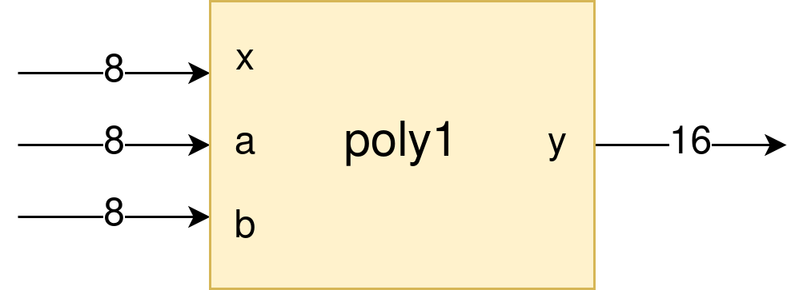

Basic tutorial¶
This basic tutorial covers the basic functions of the MAxPy framework. By the end of it, you will be able to understand how MAxPy works and its available tools. Then, you can use the framework to develop and optimize your own circuits.
To follow this tutorial, you can create and edit the files as requested, or you can use the code available here.
The problem¶
Suppose you want to make a hardware accelerator for a Polynomial Function of Degree 1: a linear function. The operation is pretty straightforward: the \(y(x)\) output for any given \(x\) input is the factor \(a\) times the \(x\) input plus factor \(b\), as shown in the equation below.
As the equation shows, we can see that the linear function is performed by two arithmetic operations: one sum and one multiplication.
Now we are going to make some assumptions for our application:
From now on, we will call our linear function circuit as poly1.
The circuit is going to have 3 inputs (x, a and b), and only one output (y);
Each of the three inputs will be 8 bits wide, being the MSB the signal bit (values ranging from -128 to 127);
To cover all possibilites for data inputs, the output will be 16 bit wide;
The application in which the linear function hardware accelerator will be used tolerates an error range of 10%. To measure the error, we are going to use the Mean Relative Error - the MRE.
Taking these assumptions into account, we can draw the following block diagram which represents our hardware accelerator:
{kind=link}
RTL design¶
Let’s write the Verilog description of our linear function hardware accelerator. Create anywhere in your system a directory called poly1, in which will put all design files used in this tutorial. From now on, we will call this the working directory. Inside the working directory, create a subdirectory named rtl, and create a new text file called poly1.v.
poly1
└── rtl
└── poly1.v
The following code is the hardware description of our circuit, written in Verilog:
module poly1(a, b, x, y);
input signed [7:0] a, b, x;
output signed [15:0] y;
assign y = a*x + b;
endmodule
Converting from Verilog to Python¶
Now we are going to compile the poly1 module in MAxPy, but without any optimizations or approximations for now. The goal at this point is to make a functional module that we can use to write our testbench.
Create a run1.py file inside the working directory:
poly1
├── rtl
│ └── poly1.v
└── run1.py
The run1.py is a Python script, which will be used to invoke MAxPy’s command. The content of the run1.py is the following:
from MAxPy import maxpy
circuit = maxpy.AxCircuit(top_name="poly1")
circuit.rtl2py(target="exact")
Notice that this script performs only three commands:
It imports the MAxPy framework into Python
It creates an instance of
AxCircuitclass and stores it in thecircuitobject, passing the RTL design’s top circuit name to thetop_nameparameter (this is important: the top circuit name passed here has to be the same declared in the Verilog module)It runs the
rtl2pymethod to convert the RTL design into a Python module, passing the valueexactto thetargetparameter
Now it’s time to get MAxPy running! Run the following lines in the terminal:
python run1.py
If everything is fine, you should see a terminal output like the following. In case of any error, please check the Installation section and review every step of this tutorial.
MAxPy - Version 0.0.1
------------------------------------------------------------------------------------
>>> MAxPy rtl2py: converting Verilog RTL design "poly1" into Python module
> Base "rtl", Target "exact"
> Start: 04-03-2023 22:48:39
> Synth
> Netlist estimated area: 110.887
> Netlist estimated power = 5.066 uW
> Netlist estimated maximum delay = 127.195 nS
> Verilator
> C++/Python Wrapper
> C++ compilation
ninja: Entering directory `poly1_exact/'
[11/11] Linking CXX shared module poly1.cpython-310-x86_64-linux-gnu.so
>> 3.8 seconds
> Module check (should print module's name)
> poly1
> End: 04-03-2023 22:48:43
>>> Circuit "poly1" converted successfully!
Let’s take a look on our working directory to see what changes after a successful compilation:
poly1
├── rtl
│ └── poly1.v
├── poly1_exact
│ ├── source
│ ├── netlist_yosys
│ ├── CMakeFiles
│ ├── CMakeLists.txt
│ ├── build.ninja
│ ├── *.log
│ └── poly1.cpython-310-x86_64-linux-gnu.so
└── run1.py
A directory named poly1_exact is created. Notice that this name is made combining the top name of the RTL design with the target parameter passed in the rtl2py command. Inside it there are several other files and directories:
poly1.cpython-310-x86_64-linux-gnu.so: this is the final product of any successful conversion of a Verilog design to Python. This .so file is a shared library that had been compiled based on our circuit funcionality, and then can be loaded into any Python script. Shortly we’ll check how to do so.netlist_yosys/: it stores the gate-level netlist generated by the logic synthesis tool. Even if thertl2pycompilation is being performed in the RTL level, a gate-level netlist is generated for resources estimation purposes (area, power and timing). If no specific synthesis tool is provided, the default one is Yosys.source/: directory which contains the C++ source files generated from the Verilog to C++ conversion process (using Verilator), plus the C++ to Python wrapper (generated by MAxPy using Pybind11). This directory exists only for the C++ compilation process, or eventally for debugging purposes. Normally the user doesn’t need to care about it.CMakeFiles/,CMakeLists.txtandbuild.ninja: the compilation of the final Python module is performed combining CMake and ninja build system. The user shouldn’t need to care about them.Log files: every step of the
rtl2pyprocess creates a*.logfile with useful debug information.
Writing a testbench¶
Now that we have a shared library, we are going to import it into another Python script to perform the simulation and get the evaluation of our circuit: this is the testbench. Create a tesbench.py in the working directory:
poly1
├── rtl
│ └── poly1.v
├── poly1_exact
│ ├── (...)
│ └── poly1.cpython-310-x86_64-linux-gnu.so
├── run1.py
└── testbench.py
Equally important as the shared libraries obtained from the rtl2py process, the testbenchs are very important in MAxPy. With them you are able to simulate your circuit operation in a Python environment without the need of a dedicated Verilog simulator. The benefits of doing so are:
Importing and exporting data to and from the circuit is way more friendly in a Python environment than it is in dedicated Verilog simulators.
Use of advanced Python libraries to get quality metrics within the simulation loop.
Feed simulation data, such as switching activity, back to MAxPy to get further optimizations with Approximate Computing Techniques.
Change the circuit behaviour during simulation using the cycle-accurate switching activity data available in every circuit on MAxPy.
However, the testbench needs to be carefully designed to meet both MAxPy’s required stucture and also the own circuit funcionality.
Take a look at the code from testbench.py showed below:
import importlib
from MAxPy import results
def testbench_run(ckt=None, results_filename=None):
lin = ckt.poly1()
rst = results.ResultsTable(results_filename, ["mre"])
print(f">>> testbench init - circuit: {lin.name()}, area: {lin.area}, parameters: {lin.parameters}")
mre = 0.0
lin.set_a(10)
lin.set_b(20)
for x in range(min, max):
lin.set_x(x)
lin.eval()
y_out = lin.get_y()
h = y_out
if y_out & 0x8000:
y_out ^= 0xffff
y_out += 1
y_out *= -1
y_ref = int(a*x) + b
if y_out != y_ref:
print(f"a {a}, b {b}, x {x}. ref {y_ref}, out {y_out} {h:x}")
rst.add(lin, {"mre": mre})
print(">>> testbench end")
if mre < 0.1:
prun_flag = True
else:
prun_flag = False
return prun_flag, lin.node_info
if __name__ == "__main__":
mod = importlib.import_module(name="poly1_exact.poly1")
testbench_run(ckt=mod, results_filename="testbench_dev.csv")
Every testbench script should look like this one! Basically, a MAxPy testbench script has two sections: the __main__ part at the bottom, and the testbench_run function.
The reason for putting the testbench routine in a separate function is that the function can be called when MAxPy is running its automated process (we’ll get into that shortly).
Also, the main part below is needed when we are designing the testbench itself, so once we have compiled a shared library, we can just run the testbench.py script without the needed of running the compilation again.
__main__: no big deal in this. It just loads a compiled shared library and calls thetestbench_runfunction, passing the shared library as argument. Notice that in this tutorial we are using thepoly1_exact.poly1compilation, but it could be any other name created in the design process.testbench_run: is the testbench routine. Here some things need to happen:The shared library is passed to the
testbench_runfunction via theckt(circuit) parameter. Then we need to make an object of the shred library so we can manipulate it. In this example, the object is calledlin(for linear), but the can be any other.
def testbench_run(ckt=None, results_filename=None): lin = ckt.poly1()
We need to create an object of a MAxPy internal structure for results recording. This structure is called
ResultsTable, and it is instantiated at therstobject. Notice that we are passing a list of strings as arguments. Each string in this list represents a quality metric used in this circuit. As we stated at the begining of this tutorial, the chosen quality metric is the MRE, so we are passing the["mre"]to theResultsTableobject. In this tutorial we are using only one quality metric. If the application requires more than one, just append the others to the same string list (for example:["mre", "mse", "mae"]).
rst = results.ResultsTable(results_filename, ["mre"])